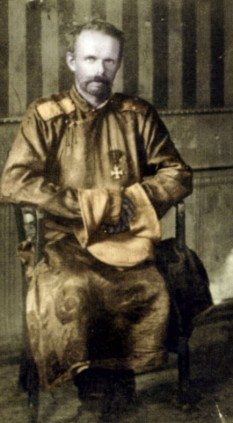

Thursday, October the 29th, 2009
back to: title, date or indexes
“The changes in his appearance suggest an atavistic religious process. In one of the few surviving photographs he appears in Russian army uniform, neatly groomed, but with an intense, monastic appearance, like an Orthodox mountain hermit, but near the end of his campaign he rode bare-chested, ‘like a Neanderthal’, hung with bones and charms, his beard sprouting in all directions and his chest smeared with dirt. He had gone from monk to shaman in a few years.”
Baron Roman Nikolai Maximilian von Ungern-Sternberg (1885–1921), as described by James Palmer in his biography The Bloody White Baron (2008)
